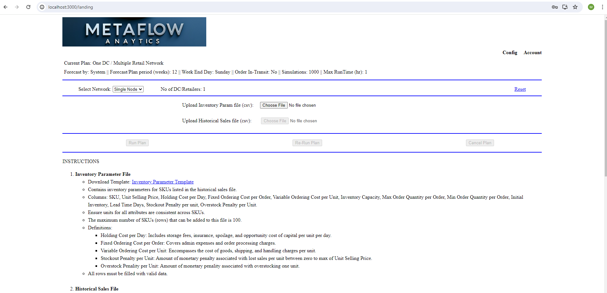
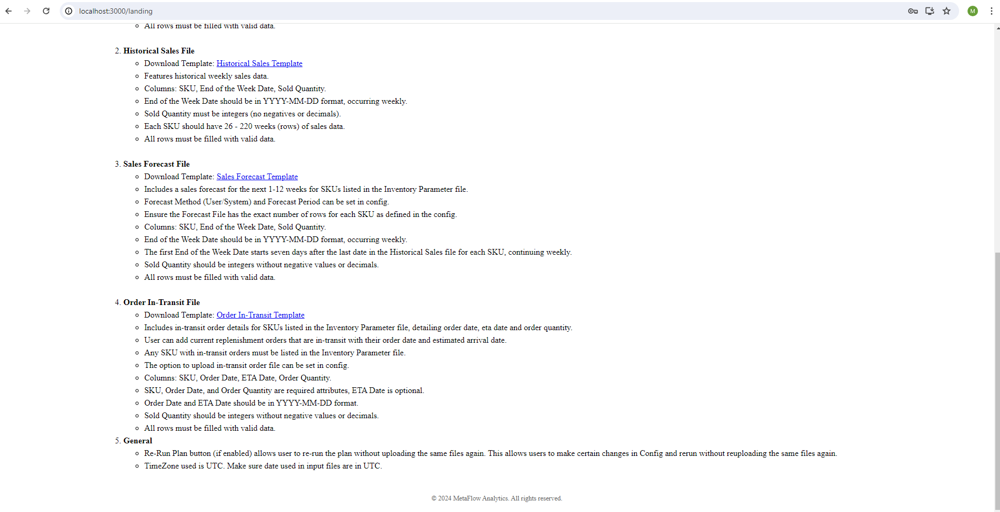
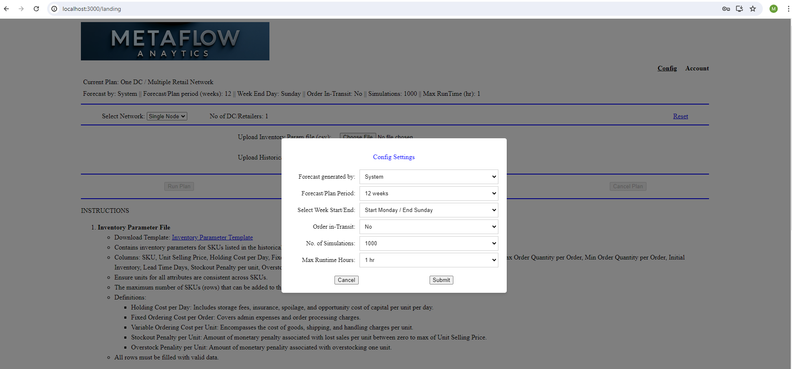
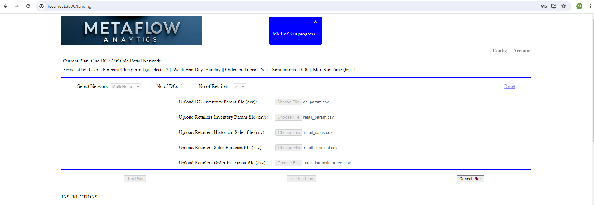
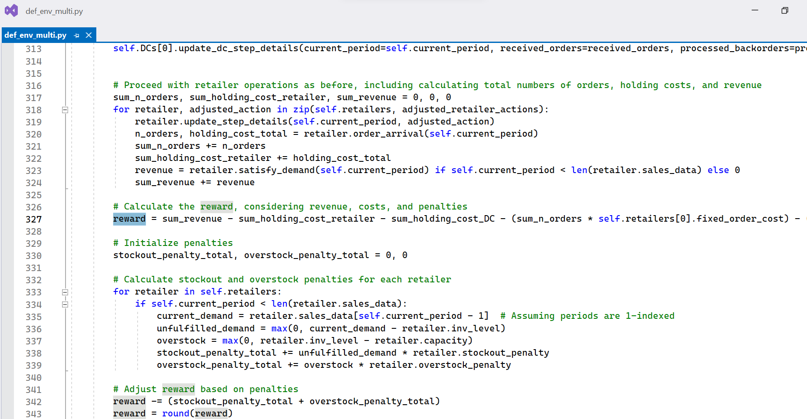
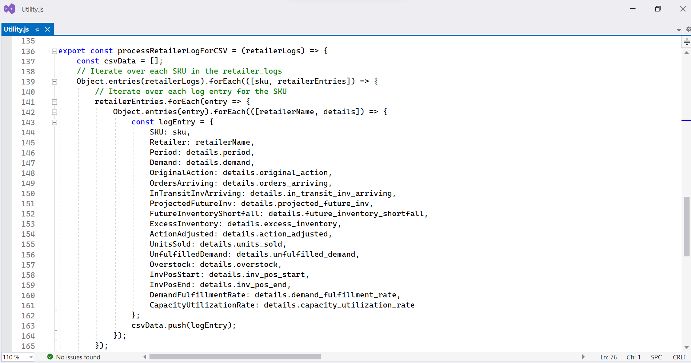
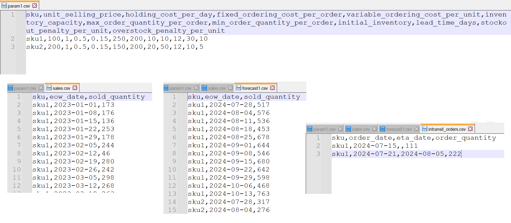

Solution Screenshots
(alpha version)







×

Cloud-based managed service launch: 2025
Single-Node inputs:
Multi-Node inputs:
The capability offers a versatile set of customizable options, allowing businesses to adapt inventory management and forecasting to their specific needs.
The Reinforcement Learning algorithm delivers detailed output metrics for both single-node and multi-node environments, enabling businesses to optimize stock levels, meet demand efficiently, and minimize costs from overstock or understock.
Summary of Outputs:
Hybrid Cloud Architecture: Split Control Plane (hosted by MetaFlow) and Data Plane (hosted by Customer, managed by MetaFlow).
| Criteria | Control Plane | Data Plane |
|---|---|---|
| What it does | Orchestration & API Management, Deployment Management, Resource Monitoring, Updates | Manage Compute Resources, Run AI Models, Generate Insights, Stores Customer Data |
| Where it is hosted | MetaFlow Cloud Account | Customer Cloud Account |
| Who provisions and monitors | MetaFlow | MetaFlow |
MetaFlow cannot directly access the resources in the Customer Cloud account and interacts with them only through AWS APIs. Customer data stays entirely within the Customer Cloud account/VPC, both at rest and in transit.
Example Workflow:
Setup and Integration Process:
To ensure the product is correctly set up and operating effectively, MetaFlow offers two tiers of service:
(alpha version)
Manoj Pandey brings over 20 years of experience across various industries, including manufacturing, retail, financial services, aerospace, cloud business, network hardware/software, and healthcare. He has worked extensively in Analytics and Machine Learning, focusing on developing AI-driven solutions for supply chain management to improve operational efficiency and productivity.(linkedin profile)
MetaFlow Analytics, Bellevue, WA
contact: info@metaflowanalytics.com
Copyright © 2024 MetaFlow Analytics - All Rights Reserved.